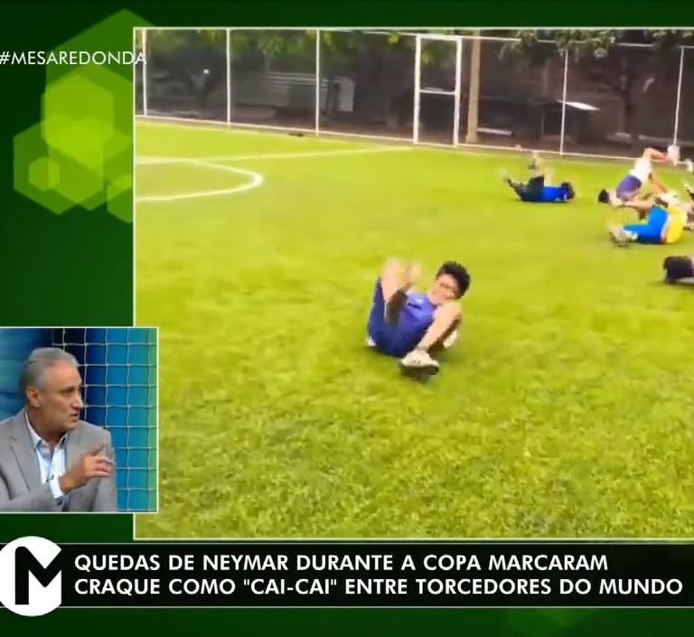

A BOY VERY MUCH POLEMIC...
We are creating a Monster
In 2010, René Simões claimed Brazilian football was “creating a monster” because of Neymar’s behavior.

The meme "Cai Cai"
The meme "Cai Cai", associated with Neymar's falls, emerged in 2018, after the World Cup in Russia.
Neymar's betrayal in 2023
In 2023 cheating controversy involving Neymar gained significant attention after reports of infidelity.